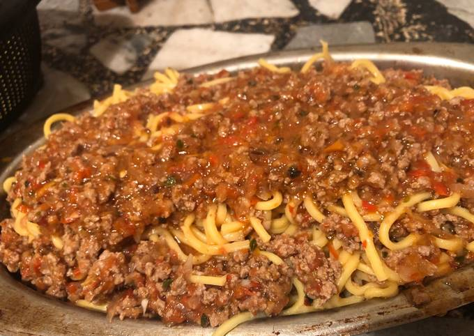

Preparación
- Comenzamos pochando el ajo y seguidamente agregamos la cebolla y la zanahoria.
- Cuando este pochado, agregamos la carne y la doramos. Salpimentamos.
- Con la carne a medio hacer, agregamos el vaso de vino tinto y dejamos que se evapore el alcohol. Seguidamente agregamos el tomate y dejamos cocinar durante unos 15 minutos.
- En este paso agregamos las especias que queramos.
- Cocinar los fideos.
- Servir los fideos con la salsa boloñesa.

Ahora puede disfrutar sus deliciosos fideos con carne !